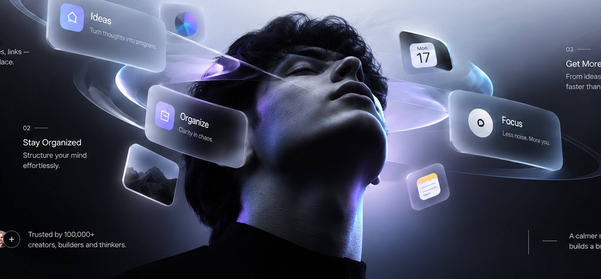

AI FOR A BRIGHTER TOMORROW
THINK / CREATE / ACHIEVE
✦
Your mind,
upgraded.
Lumind helps you capture ideas, organize your world, and turn thoughts into action — with the effortless power of personalized cognitive AI.

"Turn chaotic spontaneous thoughts into structured execution blueprints."
#strategy
#architecture
Clarity in chaos. 14 linked references synchronized across your neural graph.
Focus Mode
40Hz Gamma
Less noise. More you. Ambient neural tone active.
01 — CAPTURE ANYTHING
Frictionless Multimodal Ingest
Voice whispers, messy thoughts, screenshots, and PDFs synthesized instantly into atomic insights.
02 — STAY ORGANIZED
Zero-Manual Semantic Graph
No complex folder hierarchies. AI automatically clusters context, associations, and recall hooks.
03 — GET MORE DONE
Intention-to-Action Engine
Convert passive knowledge into structured daily agendas, drafts, and proactive milestone triggers.


100,000+ creators, builders, and thinkers rely on Lumind daily.